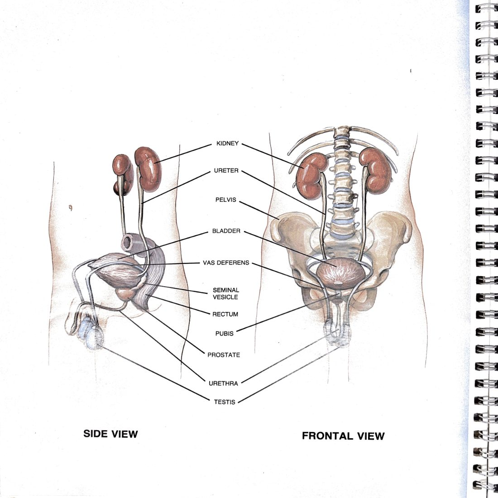
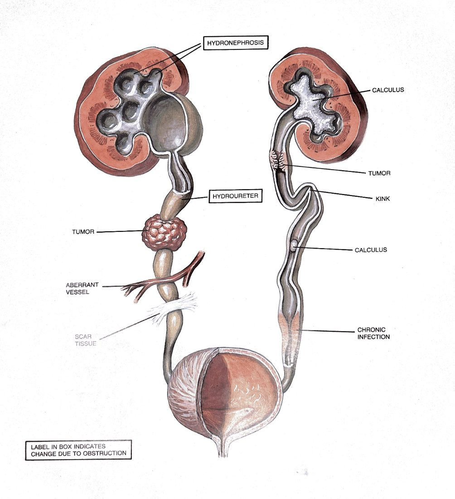
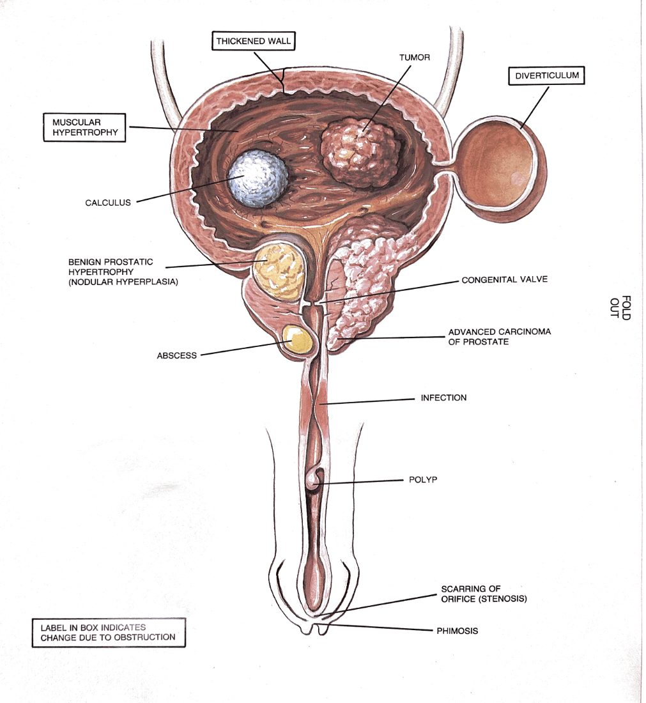

The Urinary Tract — A Conduit
Five functional stations from production to expulsion. Urine flows one way. Symptoms appear at the exit. The lesion is upstream — and your job is to localize which station first failed.
The Frame
The urinary tract is a conduit — the second of the three geometries. That changes the diagnostic question. You are not asking "how deep is the lesion?" the way you do with the abdominal wall. You are asking "which station did the flow first fail at?"
Conduits fail in characteristic ways. Block one and pressure builds upstream while the exit goes silent. Contaminate one with bacteria and the infection rides the flow downstream and rises upstream. Lose the wall integrity and the cargo leaks out where it shouldn't. The shape of the failure tells you which station.
Find where the flow visibly fails — that's the symptom layer. Then trace upstream. Every station above the failure shows back-pressure damage (dilation, distention, parenchymal injury). Every station below shows under-perfusion (atrophy, silence, no output). The lesion sits at the boundary where back-pressure ends and silence begins.

From Burroughs Wellcome Co., Atlas of the Urinary Tract.
The Five Stations
Numbered in the direction of flow. Production at the top, expulsion at the bottom. Every station has a job and a characteristic failure mode.
Station 1 Has Its Own Geometry Inside
The kidney sits at the head of the conduit, but internally it is a small layered network of its own — filtration physiology arranged as a flow path. Worth zooming in once, because urology bugs at this level have a different feel from anything else in the tract.
Where the failure sits within the kidney changes the disease completely. A glomerular lesion is one disease (proteinuria, nephritic syndromes). A tubular lesion is another (concentrating defects, AKI). A collecting-duct / calyx / pelvis lesion is a urological problem (stones in the calyx, UPJ obstruction at the pelvis-ureter junction). Same organ, three sub-stations, three different specialties.
The kidney is a conduit station from the urinary tract's point of view, but internally it is filtration physiology (layers — nephrons stacked) supplied by a vascular tree (a network). That is why a kidney can fail in three different ways: parenchymal disease (layer problem), vascular event (network problem — e.g. renal infarct), and collecting-system obstruction (conduit problem — e.g. stone). Each has a different specialist, a different test, a different fix.

From Burroughs Wellcome Co., Atlas of the Urinary Tract.
Physiology — A Two-Phase State Machine
Stations 3 and 4 work together as a state machine. The conduit is always in one of two states. The transitions are coordinated by the pontine micturition center.
| Phase | Detrusor (st. 3) | Internal sphincter (st. 4) | External sphincter (st. 4) |
|---|---|---|---|
| STORAGE sympathetic dominant (T10–L2) |
Relaxed (β3) — bladder fills at low pressure | Closed (α1) | Tonic contraction (pudendal) |
| VOIDING parasympathetic dominant (S2–S4) |
Contracts (M3) | Opens reflexively | Voluntary relaxation |
Three things have to be true for voiding to work: the detrusor has to generate pressure, both sphincters have to open, and the upstream stations have to have something to deliver. Loss of coordination — detrusor contracting against a closed sphincter (dyssynergia) — generates high pressure with no flow. That hemodynamic insult is identical to bladder outlet obstruction and damages stations 1–2 the same way.
What maintains equilibrium
- Low storage pressure. The detrusor accommodates >400 mL with almost no rise in pressure. High pressure during storage is pathologic — it back-pressures station 2 and damages station 1.
- Sphincter–detrusor coordination. When the detrusor contracts, the sphincters open. Lose this and you have no-flow voiding at high pressure.
- Sensation matches volume. First urge ~150 mL, strong urge ~300 mL, capacity ~400–500 mL. Mismatch points to a sensory or afferent issue at station 3.
Most lower-tract symptoms are a failure of one of three things: storage (urgency, frequency, incontinence — station 3), emptying (hesitancy, weak stream, retention — station 4 or 5), or coordination (post-void dribble, high-pressure low-flow — station 4). Pick the bucket first. The differential collapses immediately.
Pathophysiology as Station Failure
Four mechanisms account for almost everything. For each: which station holds the lesion, which station shows the symptom, and what's the back-pressure pattern that gives it away.
| Mechanism | Lesion station | Symptom shows at | Upstream signature |
|---|---|---|---|
| Obstruction stone, BPH, stricture, tumor, clot |
Wherever the lumen narrows (2 and 5 most common) | The exit goes silent (no output, weak stream) or the patient feels pain at the dilated upstream station | Dilation above the lesion — hydronephrosis if upper tract, distended bladder if outlet |
| Infection cystitis, pyelonephritis, prostatitis |
Wherever bacteria colonize (1, 3, 5) | Dysuria at the exit (st. 5); systemic signs if station 1 is involved | Vital signs change with station depth. Cystitis: afebrile. Pyelonephritis: febrile, ill. Same family of bacteria, two stations, two diseases. |
| Neurogenic dysfunction SCI, MS, diabetes, stroke |
Above the conduit — brain, cord, peripheral nerve | Stations 3 and 4 behave wrong without intrinsic disease | Imaging the bladder or sphincter is unrevealing. The lesion is in the wiring, not the conduit. |
| Malignancy RCC, urothelial Ca, prostate Ca |
Any station; tissue-specific | Hematuria at the exit, or asymptomatic incidental finding | Often no upstream signature until the tumor obstructs. Painless gross hematuria is malignancy until proven otherwise — precisely because there is no back-pressure to alert you. |
"Burning when I pee" is a station 5 symptom. The reflex is to treat for cystitis at station 3. But the same symptom comes from urethritis (station 5), prostatitis (station 5-adjacent), a distal stone wedged at the UVJ (boundary of stations 2 and 3), or atrophic vaginitis next door. The urinalysis isn't a confirmation test — it's a localization test. A clean UA in a "UTI" pushes you off station 3 immediately and forces you to look elsewhere.
Two pictures that earn their place
What follows are the two single most useful illustrations in this whole document. Each shows the conduit with every conceivable lesion at every station, in one drawing. Look at them long enough that you can localize a presentation to a station by pattern recognition — that's what the cards on call will demand of you.

From Burroughs Wellcome Co., Atlas of the Urinary Tract.

From Burroughs Wellcome Co., Atlas of the Urinary Tract.
Diagnostic Algorithm — Matched to Station
Every test you have access to images a different segment of the conduit. You don't pick the test based on the symptom; you pick it based on which station you still need to see. Know what each test reveals — and just as importantly, where you remain blind.
| Test | Station(s) it images | What it answers | Where you're blind |
|---|---|---|---|
| Urinalysis | The cargo — not the conduit | Is there blood, infection, protein, glucose, crystals? | Cannot localize. Blood in UA could be from any station. |
| Urine culture | The cargo, with organism ID | What organism, what sensitivity? | Doesn't tell you which station is colonized. |
| Post-void residual | Station 3 function | Does the bladder empty? | Doesn't tell you why it didn't empty — obstruction vs. weak detrusor. |
| Uroflow + urodynamics | Stations 3, 4, 5 — functional | Storage pressure, voiding pressure, flow rate, sphincter coordination | No anatomy. A flat-line flow says something is obstructed — not where. |
| Cystoscopy | Stations 3, 4, 5 — direct visualization of the lumen | What does the inside of the conduit actually look like? Stones, tumors, strictures, prostatic encroachment. | Only what's inside the lumen. A 4 cm renal mass at station 1 is invisible. |
| Ultrasound (renal + bladder) | Stations 1, 3 — structural | Hydronephrosis, bladder volume, stones, masses | Bowel gas obscures station 2 (ureter). Operator-dependent. |
| CT urogram | Stations 1, 2, 3 — full upper-tract structural | Stones, masses, hydronephrosis, anatomy | Function. A dilated system could be obstructed now or scarred from years ago. |
| MRI pelvis | Stations 3, 4, 5 — soft tissue detail | Prostate cancer staging, pelvic floor anatomy | Stones (not bright on MRI). Acute infection. |
| Biopsy | Tissue diagnosis at the lesion station | What is this growth, histologically? | Sampling error. A negative biopsy rules out cancer in the cores you took — nothing more. |
Tests get more invasive as you go deeper into the conduit's interior. UA is free and reads the cargo. Cystoscopy is direct and invasive. Biopsy is tissue and committed. You earn the right to a deep test by failing to localize with a shallow one.
When a senior asks "what's the next test?" they are really asking "which station are you still blind to?" Answer that and the test picks itself.
Treatment — Fix at the Station of the Lesion
This is the discipline that separates conduit thinking from symptomatic management. The temptation is to treat where the patient is uncomfortable — at the exit. The discipline is to treat where the flow first failed.
BPH: the canonical example
An enlarged prostate compresses the prostatic urethra (station 5). The patient presents with retention — a station 3 functional consequence and an exit complaint ("I can't go"). The bladder is innocent. It has been pumping against an outlet that won't open. Pressure builds backward through station 2 to station 1, where the kidneys are paying the bill.
Putting a catheter in fixes the exit — urine comes out. But the prostate is still there. Stop the catheter, the retention returns. The lesion is at station 5. Treatment options all act there:
- α-blocker (tamsulosin) — relaxes smooth muscle at the bladder neck and prostatic urethra. Acts on stations 4–5.
- 5α-reductase inhibitor (finasteride) — shrinks the prostate over months. Acts on the structure itself.
- TURP / HoLEP / UroLift — surgically remove or retract the obstructing tissue. Definitive station 5 intervention.
Catheter management treats the symptom. Each of the above treats the lesion. Both are sometimes appropriate — but you should always know which one you are doing and why.
The principle generalizes
| Presentation | Where the patient feels it | Lesion station | Where you treat |
|---|---|---|---|
| Renal colic | Flank → groin (referred up the dermatome) | Stone at station 2 | Station 2 — pass, lithotripsy, ureteroscopy, stent |
| Painless gross hematuria | Color of urine | Anywhere from station 1 to 5 | Wherever the lesion is localized — never the exit unless it's there |
| Urgency / frequency | "I have to go" | Detrusor overactivity (station 3) or sensory afferent (station 3) | Station 3 — antimuscarinic, β3 agonist, behavioral, BoNT |
| Stress incontinence | Leak with cough | Sphincter / pelvic floor (station 4) | Station 4 — pelvic floor PT, sling, bulking agent |
| Recurrent UTI in a man | Dysuria | Anatomic abnormality enabling colonization — stone, residual, prostate | The enabling lesion. Antibiotics handle this episode; they don't fix the cause. |
"Stop the bleeding, stop the pain, drain the obstruction" is emergency medicine. It buys time. It is not the operation. Once the patient is stable, ask the question every time: which station first failed, and what treats it there? Then plan the definitive treatment at that station.
A Worked Case — "I Can't Pee"
68-year-old man. Presents to the ED. Suprapubic fullness, hasn't urinated in 14 hours, last attempt produced "a few drops." Walk it up the conduit.

- Foley catheter — relieves back-pressure across the conduit. Symptomatic. Buys time.
- Tamsulosin — station 4/5 smooth muscle relaxation. Started immediately to improve voiding-trial odds.
- Voiding trial in 3–7 days — test whether α-blockade alone restores function.
- Outpatient urology follow-up — PSA (delayed), discussion of 5-ARI vs. surgical management (TURP / HoLEP / UroLift). This is where the lesion is actually treated.
- Renal function recheck — confirm station 1 recovers once station 5 is opened.
The patient pointed at the exit. The bladder scan confirmed station 3 was distended. The lesion was at station 5. The damage had back-pressured to station 1. Every station mattered, but only one was the target of the operation. Ask of every patient: where did the flow first fail, and what treats it there?
The Conduit's Particular Pain — Referred Symptoms
Conduits refer in characteristic ways because back-pressure damages tissue at one station while the patient feels pain dermatomally somewhere else. You will be wrong about location constantly if you trust the patient's pointing finger.
- UPJ stone (station 1/2 boundary) → flank pain from capsular stretch of the kidney. Mimics MSK back pain.
- Mid-ureteral stone (station 2) → lateral abdominal pain. Mimics appendicitis on the right, diverticulitis on the left.
- UVJ stone (station 2/3 boundary) → groin / testicular / labial pain. Mimics hernia, torsion, epididymitis.
- Bladder pathology (station 3) → suprapubic, sometimes referred to tip of penis or perineum.
- Prostatitis (station 5-adjacent) → perineum, low back, tip of penis, testicles, rectum. Five referral zones from one inflamed structure.
- Renal capsular stretch (station 1) → flank, costovertebral angle. May radiate to ipsilateral shoulder if diaphragmatic irritation is involved.
The pattern: the patient's finger points to the dermatome, not the station. Same lesson you'd learn anywhere referred pain shows up. Accept the symptom, distrust the localization, image the station.
The Algorithm, One More Time
Step 1 — Take the exit complaint at face value. → Patient says "burning," "blood," "can't go," "leaking." → That names the bucket: storage / emptying / hematuria / pain. Step 2 — Run the shallowest test that excludes the most. → UA + culture. Bladder scan if the bucket is emptying. → A clean UA in a "UTI" reroutes you. A 600 mL PVR reroutes you. Step 3 — History triages the stations. → Neuro symptoms? → above the conduit · station 4 wiring → Slow stream for years? → chronic outlet · station 5 → Painless gross hematuria? → assume malignancy until imaged + scoped Step 4 — Exam the lesion station directly when you can. → DRE for prostate. Meatal exam for st. 5 surface. → Pelvic exam where appropriate. Step 5 — Image the station you are still blind to. → Upper tract concern? → CT urogram / renal US → Functional concern? → urodynamics → Luminal concern? → cystoscopy Step 6 — Tissue only when imaging cannot answer. → Biopsy is the deepest test. Use last. Use targeted. Step 7 — Treat at the lesion station. → Not where it hurts. Not at the exit. Not at the dilation upstream. → At the station where flow first failed.
May 24, 2026 — for PAs, medical students, and clinical clerks
the urinary tract is a conduit · trace upstream from the exit · treat at the station where flow first failed
← back to reference